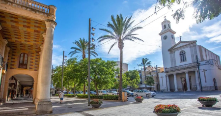
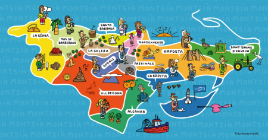
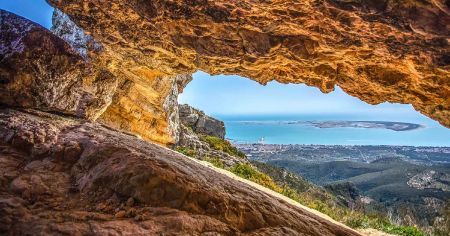
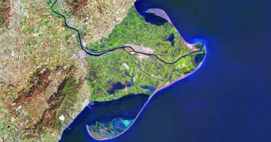

La nostra Terreta ofereix un gran ventall de possibilitats per planejar les teves sortides a partir de La Cabanya que és casa vostra.Voleu conèixer més del nostre territori ? Obre una ostra i troba alguna perla o tresor ...

La Ràpita
El rovellet de l'ou de la comarca, on els humans es van instal·lar ja al paleolític gaudint d'un clima excepcional protegit per la Serra del Montsià i la Badia dels Alfacs. Ciutat de reis i de pirates en l'antiguitat, ha esdevingut un destí turístic i gastronòmic de primera categoria i amb un port pesquer dels més importants de tota Catalunya i pot ser de la Península Ibèrica.
Saber-ne més

El Montsià
El Montsià comprèn part del Delta i del riu Ebre, del massís del Port, de la plana litoral i les serres del Montsià, de Godall i el pla de la Galera. Aquesta diversitat geogràfica dóna lloc a una gran varietat de paisatges que contrasten entre si.Descobrir el Montsià és conèixer el territori, però també la seva gent i el seu caràcter obert i solidari.
Saber-ne més

La Foradada
La Foradada esdevé un mirador impressionant de la Serra del Montsià situat a uns 700 metres d'altura comprés dins l'última etapa (31a) del GR-92 de Catalunya, passant per la Font del Burgar, el Mas de Mata-Redona i la pujada més abrupta per arribar a la roca Foradada, conectant amb el camí de Sant Jaume. Les vistes amb lluna plena són extraordinàries.
Saber-ne més

La Badia dels Alfacs
La nostra badia, formada al segle XVI, és un dels ports naturals més segurs de la costa catalana per a embarcacions que no calin més de 6 metres, amb l'única entrada per Punta Galatxo, ofereix una protecció natural per practicar esports nàutics, per a milers d'espècies d'ocells i peixos, per al cultiu de l'ostró i el musclo, i per l'explotació salinera.
Saber-ne més

El Trabucador
L’istme del Trabucador és un espai natural molt fràgil i espectacular del Delta de l’Ebre que corre el risc de desaparèixer.Els nadius de la Ràpita sempre hem dit que tenim dues mars, la mar de dins (planera i tranquil·la) i la mar de fora (brava i salvatge).Lloc de trobada per practicar el surf de vela, el surf d'estel, la vela lleugera, el caiac i d'altres esports nàutics amb seguretat per la poca profunditat i els seus vents favorables. Les postes de sol són impressionants.
Saber-ne més

Punta de la Banya
La Punta de la Banya és una península amb l'àrea natural més extensa del Delta de l'Ebre al seu extrem sud connectada pel Trabucador. Destaquen les salines de la Trinitat, on s'acullen, ocells marins, limícoles i flamencs al llarg de l'any. L'espai resta amb accés restringit tot l'any. Aquesta zona forma part de l'espai del PEIN "Delta de l'Ebre", del Parc Natural i de l'espai de la Xarxa Natura 2000 "Delta de l'Ebre". Així mateix, tota la punta de la Banya és reserva natural parcial des de l'any 1986.
Saber-ne més

El Parc Natural
El Parc Natural del Delta de l'Ebre es troba a la desembocadura del riu Ebre, a la província de Tarragona i a les comarques del Montsià i del Baix Ebre, a la part més meridional del Principat de Catalunya. Es va declarar espai protegit el 1983, i va ser ampliat posteriorment el 1986 amb una extensió de 7.736 hectàrees. Ajuda'ns a protegir-lo !
Saber-ne més

El Delta de l'Ebre
La zona humida més important de Catalunya. A la desembocadura del riu Ebre es troba el Delta de l’Ebre, una de les zones humides més grans de l’Europa mediterrània i l’hàbitat aquàtic més extens de Catalunya que compta amb 320 Km2. El Delta de l’Ebre és un marc natural incomparable que reuneix una diversitat de flora i fauna de valor incalculable.
Saber-ne més
Com arribar-hi
Planifica la teva ruta amb Google Maps.
Obre el mapa